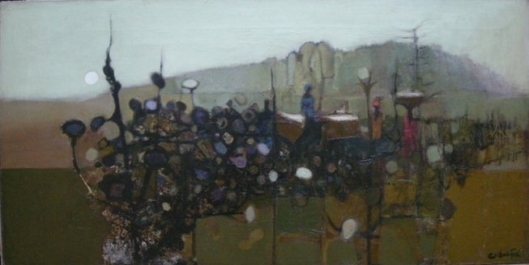

Clifford Frith
B. 1924
Artist Biography
Clifford Frith was born in London and studied at the Camberwell School of Arts and Crafts—where he later taught—and at St Martin’s School of Art. His teachers included Victor Pasmore and Roland Vivian Pitchforth. Frith also taught at Goldsmiths’ College and Croydon College, where his students included Bridget Riley and Allen Jones. He exhibited widely in the UK, including at the Royal Academy, Wildenstein, and Redfern Galleries.
A major contribution of Frith’s career occurred in Nigeria, where he served as Head of the Art Department at Ahmadu Bello University (ABU), Zaria, from 1959 to 1962. This was a pivotal institution during a formative period in the growth of modern art in newly independent Nigeria. Frith’s London School-style modernist figurative painting and formal experimentation significantly influenced young Nigerian artists, including Uche Okeke and members of the Zaria Art Society.
In 1972, Frith relocated to Australia, continuing his teaching and painting practice. His work is represented in public collections globally, including the National Gallery of Australia, Parliament House in Canberra, the Victoria & Albert Museum in London, the Victoria Art Gallery in Bath, and the Tate Modern (where he was cited in Nigerian Modernism 2025–2026 as a pivotal teacher of the Zaria school).

Harmattan landscape with Figures, 1960–1961